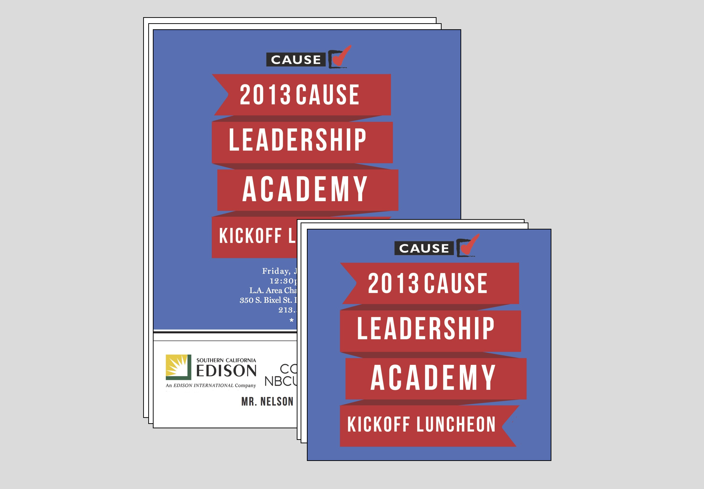

CAUSE USA
In the summer of 2013 I had the wonderful opportunity to work at 501(c) nonprofit CAUSE USA whose work focuses on empowering Asian Americans. There, I worked directly under the Director of Communications and had the opportunity to dive into the world of marketing and communications. I designed pamphlets, help run events such as the Women in Power conference (feature Kamala Harris as a speaker that year!), did press outreach, and even helped repaint the CAUSE Office :)